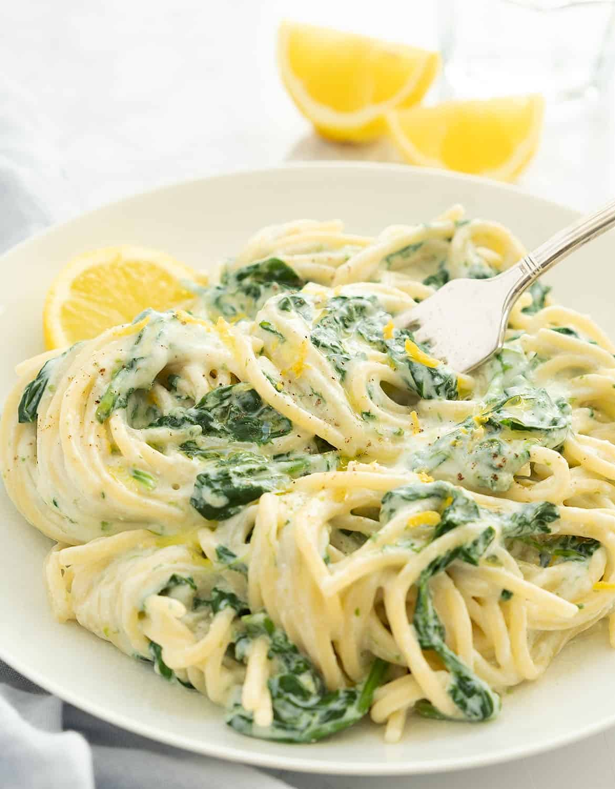

Lemon Ricotta Spinach Pasta

Description
This is a simple recipe to make lemon, ricotta and spinach pasta and enjoy when in a pinch. It consists of first preparing the pasta then preparing the ricotta and lemon sauce for the pasta. Then we mix the sauce and pasta together. Lastly, spinach is added to the mix and dish is ready to serve!
Ingredients
- 1 pound fusilli corti bucati pasta
- 1 cup ricotta cheese
- 1/2 cup olive oil
- 1/2 cup freshly grated Parmesan cheese, plus more for serving
- 2 lemons, zested and juiced
- 1 teaspoon salt, or to taste
- 1 teaspoon Italian seasoning
- 1/2 teaspoon garlic powder
- 1/2 teaspoon freshly ground black pepper
- 1 pinch crushed red pepper flakes
- 2 cups baby spinach
- small handful basil leaves, cut into very thin strips, or to taste
- 1 teaspoon fresh thyme, or to taste
- lemon slices
Steps
- Bring a large pot of lightly salted water to a boil. Add fusilli and return to a boil; cook until pasta is tender with a bite, 8 to 12 minutes. Reserve 2 cups pasta water, then drain. Return pasta to the pot.
- In a medium bowl, stir together ricotta, olive oil, Parmesan cheese, lemon juice, and lemon zest. Season with Italian seasoning, garlic granules, salt, black pepper, and a pinch of red pepper flakes.
- Add ricotta mixture and 1/4 cup reserved pasta water to pasta and toss. The sauce will thicken and adhere as it is tossed. Add more reserved pasta water if the sauce is too thick.
- Place spinach in a colander. Pour remaining reserved pasta water over spinach to wilt; toss spinach into pasta.
- Divide into serving bowls. Top each serving with a slice of lemon, basil, thyme, cheese and a drizzle of olive oil, if desired.